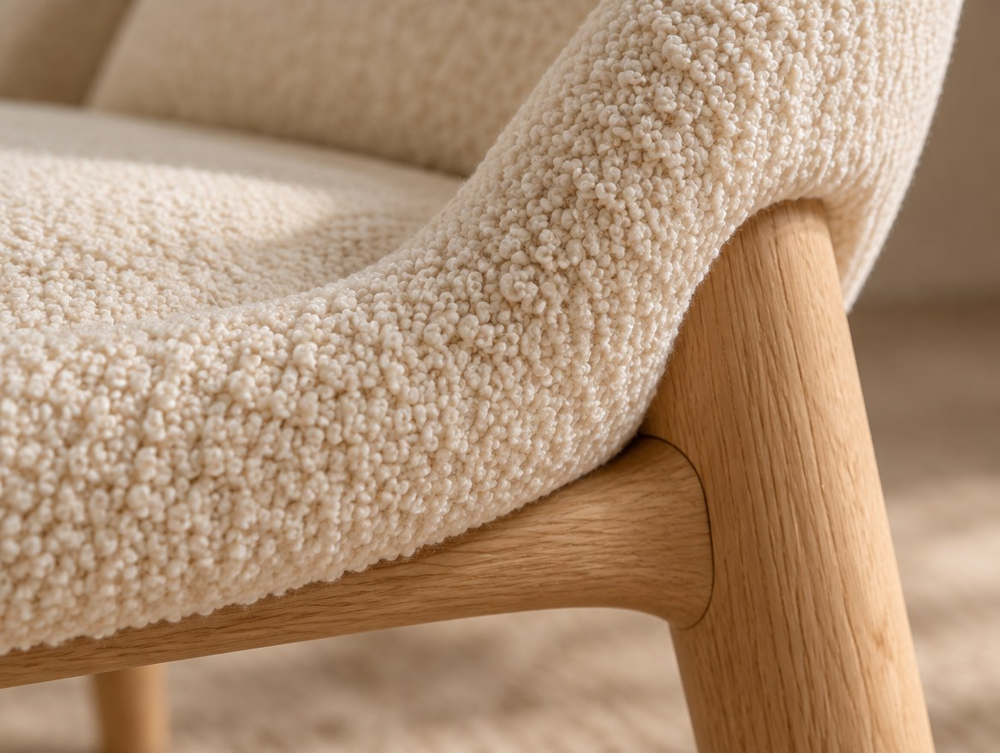

Week 04 — Offline · AI × Industrial Design
UNDERSTANDING
THE WEB &
PORTFOLIO
PLANNING
From Product Design to Digital Experience
제품을 디자인했다면, 이제 그 제품을
보여 줄 웹 경험을 설계합니다.
인환 · 240 min · No Coding
PART 01 — Understanding the Web
제품 디자인에서 웹으로
FROM PRODUCT TO WEB
WEEK 01
IDEA → CONCEPT
스케치와 콘셉트
WEEK 02
REFINE & VISUALIZE
형태 · CMF · 디테일 · Hero
WEEK 03
PRODUCT EXPERIENCE
사용 시나리오 · 제품 영상
WEEK 04
DIGITAL EXPERIENCE
웹사이트 · 포트폴리오
1~3주차는 제품을 만들었고, 4주차는 그 제품을 보여 줄 화면을 설계합니다.
결과물이 아무리 좋아도, 보는 사람에게 전달되는 방식이 정리되지 않으면 그 가치는 절반만 보입니다.
2
PART 01 — Understanding the Web
오늘의 목표
TODAY'S GOAL
01
UNDERSTAND
웹을 이해한다
웹사이트가 어떻게 만들어지고
어떻게 보이는지 안다
02
ANALYZE
레퍼런스를 분석한다
좋은 포트폴리오 사이트의
구조와 표현을 읽어 낸다
03
PLAN
웹사이트를 기획한다
사이트 구조(IA)와 와이어프레임을
직접 설계한다
FINAL OUTPUT
Website Planning Board
다음 온라인 수업에서 AI로 웹사이트를 만들 때 그대로 쓰는 기획 보드
3
PART 01 — Understanding the Web
웹이란 무엇인가
WHAT IS THE WEB?
INTERNET
인터넷 · 전 세계 컴퓨터를 잇는 연결망
도로망에 해당합니다.
메일, 메신저, 게임, 웹이 모두 이 길 위를 달립니다.
WEB
월드 와이드 웹 · 인터넷 위의 문서 공간
그 도로 위에 있는 수많은 건물입니다.
브라우저로 열어 보는 페이지들이 서로 링크로 연결된 공간입니다.
웹사이트 = 주소(URL)로 찾아가고, 브라우저로 열어 보는, 링크로 연결된 페이지의 묶음
우리가 만들 포트폴리오도 이 건물 중 하나입니다.
4
PART 01 — Understanding the Web
디자이너에게 웹사이트가 필요한 이유
WHY DESIGNERS NEED A WEBSITE
01
ALWAYS ON
언제든 열리는 작업물
링크 하나로 누구에게나
24시간 보여 줄 수 있다
02
STORY
과정을 담는 이야기
PDF보다 길고 풍부하게
스케치 → 결과까지 보여 준다
03
MEDIA
이미지 · 영상 · 인터랙션
3주차 제품 영상처럼
움직이는 결과를 그대로 담는다
04
IDENTITY
나를 보여 주는 방식
사이트의 구조와 톤 자체가
디자이너의 감각이 된다
포트폴리오 사이트는 작업물을 담는 그릇이자, 그 자체로 하나의 디자인 결과물입니다.
5
PART 01 — Understanding the Web
제품 디자인과 웹 디자인은 같은 사고를 쓴다
PRODUCT DESIGN ≈ WEB DESIGN
PRODUCT DESIGN
WEB DESIGN
형태 · 비례
Form & Proportion
→
레이아웃 · 그리드
Layout & Grid
CMF (색 · 소재 · 마감)
CMF
→
컬러 · 타이포그래피 · 이미지 톤
Visual Style
사용 시나리오
User Scenario
→
사용자 흐름 · 내비게이션
User Flow
인터랙션 (행동 → 반응)
Interaction
→
버튼 · 링크 · 스크롤 반응
UI Interaction
Hero Image
Hero
→
첫 화면 (Hero Section)
First Impression
새로 배우는 것이 아니라, 이미 해 온 결정을 화면이라는 재료로 옮기는 것입니다.
6
PART 01 — Understanding the Web
웹사이트의 종류
TYPES OF WEBSITES
PORTFOLIO
포트폴리오
여러 프로젝트를 모아
디자이너를 소개
CASE STUDY
프로젝트 상세
한 프로젝트의 과정과
결과를 깊게 설명
PRODUCT LANDING
제품 소개 페이지
한 제품의 가치를
한 페이지로 전달
BRAND SITE
브랜드 사이트
회사 · 브랜드의
철학과 제품군 소개
E-COMMERCE
쇼핑몰
상품을 탐색하고
구매까지 연결
오늘 기획할 사이트 = 포트폴리오 + 라운지체어 프로젝트 상세 페이지
첫 화면에서 나를 소개하고, 프로젝트 페이지에서 제품 하나를 깊게 보여 주는 구조입니다.
7
PART 02
HOW WEBSITES
WORK
웹사이트는 어떻게 동작하는가
주소를 입력하면 무슨 일이 일어나는지, 그리고 화면을 만드는 세 가지 언어를 코딩 없이 읽어 봅니다.
45 MIN
8
PART 02 — How Websites Work
브라우저와 서버
CLIENT & SERVER
CLIENT
내 컴퓨터의 브라우저
Chrome · Safari
SERVER
웹사이트 파일이 저장된
인터넷 위의 컴퓨터
① REQUEST →
"라운지체어 페이지 보여 주세요"
← ② RESPONSE
HTML · CSS · JS · 이미지 파일 전달
웹은 요청(Request)과 응답(Response)의 반복입니다.
식당에 비유하면 브라우저는 손님, 서버는 주방입니다. 주문을 받으면 주방이 요리(파일)를 내어 줍니다.
9
PART 02 — How Websites Work
웹사이트에 필요한 세 가지
DOMAIN · HOSTING · FILES
01
DOMAIN
도메인 · 주소
사람이 기억하는 사이트 이름
studio-name.com
비유 · 집 주소
02
HOSTING
호스팅 · 서버 공간
파일을 올려 두고 24시간
열어 두는 인터넷 위의 공간
비유 · 땅과 건물
03
FILES
웹사이트 파일
화면을 이루는 HTML · CSS ·
JS · 이미지 · 영상
비유 · 가구와 인테리어
다음 온라인 수업에서는 AI 웹 빌더가 파일 제작과 호스팅을 함께 처리합니다.
우리가 결정할 것은 주소(사이트 이름)와, 그 안에 무엇을 어떻게 담을지입니다.
10
PART 02 — How Websites Work
주소를 입력하면 일어나는 일
WHAT HAPPENS WHEN YOU OPEN A PAGE
01
TYPE URL
주소 입력
studio-name.com
→
02
FIND SERVER
서버 찾기
도메인 → 서버 위치 확인 (DNS)
→
03
REQUEST
파일 요청
브라우저가 서버에 페이지 요청
→
04
RESPONSE
파일 전달
HTML · CSS · JS · 이미지
→
05
RENDER
화면 그리기
브라우저가 파일을 읽고
화면으로 조립
이 모든 과정이 1~2초 안에 일어납니다.
이미지가 너무 크면 ④ 단계가 길어지고, 첫 화면이 늦게 뜹니다 — 디자이너가 이미지 용량을 신경 써야 하는 이유입니다.
11
PART 02 — How Websites Work
화면을 만드는 세 가지 언어
HTML · CSS · JAVASCRIPT
HTML
STRUCTURE
구조 · 무엇이 있는가
제목, 이미지, 문단, 버튼이
어떤 순서로 있는지 정한다
≈ 의자의 프레임 · 뼈대
CSS
STYLE
표현 · 어떻게 보이는가
색, 글꼴, 크기, 여백,
배치를 정한다
≈ 의자의 CMF · 부클레와 오크
JS
BEHAVIOR
동작 · 어떻게 반응하는가
클릭, 스크롤, 슬라이드 같은
움직임과 반응을 만든다
≈ 의자의 인터랙션 · 앉으면 반응
디자이너가 주로 결정하는 것은 HTML의 순서(구조)와 CSS의 표현(스타일)입니다.
12
PART 02 — How Websites Work
코드 읽어 보기 · 짜지 않고 읽기만
READING THE CODE
HTML
구조 · 무엇이 있는가
<section class="hero">
<img src="chair.jpg"
alt="Bouclé Lounge Chair">
<h1>Bouclé Lounge Chair</h1>
<p>부드러운 곡선의 1인 라운지체어</p>
<button>자세히 보기</button>
</section>
CSS
표현 · 어떻게 보이는가
.hero {
background: #F4F0EA;
padding: 80px;
}
h1 {
font-size: 48px;
color: #2B2622;
}
button {
border-radius: 24px;
}
JS
동작 · 어떻게 반응하는가
const btn =
document.querySelector('button');
btn.addEventListener('click', () => {
detail.scrollIntoView({
behavior: 'smooth'
});
});
이미지 · 제목 · 설명 · 버튼이
이 순서로 있다
배경은 크림색, 제목은 48px,
버튼은 둥글게
버튼을 누르면
상세 영역으로 부드럽게 스크롤
오늘 기획서의 문장이 다음 주에 AI가 쓰는 이 코드가 됩니다. 정확히 말할수록 정확한 코드가 나옵니다.
13
PART 02 — How Websites Work
하나의 사이트, 여러 개의 화면
RESPONSIVE WEB
DESKTOP · 1440px
TABLET · 768px
MOBILE · 390px
화면 크기에 따라 배치가 바뀌는 것을 반응형(Responsive)이라고 합니다. 기획할 때 데스크톱과 모바일을 함께 생각합니다.
14
PART 03
WEB DESIGN
FUNDAMENTALS
웹 디자인의 기본 요소
레이아웃 · 타이포그래피 · 컬러와 이미지 · 위계와 여백 · 내비게이션 — 화면을 구성하는 다섯 가지 재료를 봅니다.
30 MIN
15
PART 03 — Web Design Fundamentals
보이지 않는 질서
LAYOUT & GRID
COLUMN · 세로 칸
화면을 12개 정도의 칸으로 나눈다
GUTTER · 칸 사이 간격
요소 사이 여백을 일정하게
MARGIN · 바깥 여백
화면 가장자리와의 거리
텍스트는 왼쪽 6칸, 의자 이미지는 오른쪽 5칸 — 칸에 맞춰 놓으면 정돈되어 보입니다.
16
PART 03 — Web Design Fundamentals
글자의 크기가 곧 순서다
TYPOGRAPHY
H1
제목 · 48~72px
Bouclé Lounge Chair
H2
섹션 제목 · 32~40px
Design Process
BODY
본문 · 16~18px
부드러운 곡선과 부클레 소재로 몸을 감싸는 1인 라운지체어
CAPTION
캡션 · 12~14px
Material — Cream bouclé, Solid oak
크기 단계는 3~4개, 글꼴은 1~2개면 충분합니다.
제목 글꼴은 제품의 성격을 닮게 — 부드러운 의자라면 둥글고 여유 있는 글꼴이 어울립니다.
17
PART 03 — Web Design Fundamentals
제품의 CMF에서 화면의 색을 가져온다
COLOR & IMAGE

Bouclé Cream
#F4F0EA
배경 · 70%
Warm Sand
#E4DCD0
면 구분 · 20%
Oak
#C8A67A
포인트 · 5%
Deep Brown
#2B2622
글자 · 버튼 · 5%
색은 새로 고르지 않고 제품의 소재에서 뽑아냅니다 — 부클레 → 배경, 오크 → 포인트.
이미지는 포트폴리오의 주인공입니다. 같은 조명 · 같은 배경 톤으로 맞추면 사이트 전체가 하나의 제품처럼 보입니다.
18
PART 03 — Web Design Fundamentals
무엇을 먼저 보게 할 것인가
HIERARCHY & WHITESPACE
BEFORE · 모든 것이 같은 크기로 경쟁한다
AFTER · 제목 → 의자 → 버튼 순서로 읽힌다
여백은 빈 공간이 아니라 시선을 이끄는 장치입니다. 한 화면에 하나의 메시지.
19
PART 03 — Web Design Fundamentals
길을 잃지 않게 하는 장치
NAVIGATION & INTERACTION
01
NAVIGATION
메뉴 · 길 안내
지금 어디 있고, 어디로 갈 수 있는지
Work · About · Contact
→ 메뉴는 3~5개
02
CTA
행동 유도 버튼
보는 사람이 다음에 할 행동
View Project · Contact Me
→ 한 화면에 주 버튼 1개
03
SCROLL
스크롤 흐름
위에서 아래로 읽히는 이야기
섹션이 하나씩 등장
→ 3주차 시나리오처럼 순서 설계
04
FEEDBACK
반응
마우스를 올리면 바뀌고
누르면 이동한다
→ 3주차 행동 → 반응 → 피드백
웹의 인터랙션은 3주차에 배운 사용자 행동 → 제품 반응 → 피드백과 같은 구조입니다.
20
PART 04
PORTFOLIO
REFERENCE ANALYSIS
포트폴리오 레퍼런스 분석
좋은 사이트를 따라 하는 것이 아니라, 왜 좋은지를 구조 · 레이아웃 · 타이포 · 이미지 · 인터랙션으로 나누어 읽습니다.
40 MIN
21
PART 04 — Portfolio Reference Analysis
따라 하기가 아니라 읽어 내기
WHY REFERENCES
COPY
"이 사이트처럼 만들어 주세요"
겉모습만 옮겨 오면 내 제품과 맞지 않고,
다른 사람의 사이트와 똑같아집니다.
ANALYZE
"첫 화면에 제품 사진 한 장만 크게 두어
제품이 주인공이 되게 한다"
이유를 말로 정리하면 원리만 가져와
내 제품에 맞게 다시 적용할 수 있습니다.
분석한 문장은 그대로 다음 주 AI에게 줄 지시문이 됩니다.
“이 사이트처럼”보다 “첫 화면에 제품 사진 한 장, 여백 넓게”가 훨씬 정확한 결과를 만듭니다.
22
PART 04 — Portfolio Reference Analysis
포트폴리오 사이트의 세 가지 패턴
THREE PORTFOLIO PATTERNS
A · GALLERY GRID
갤러리형
작업 썸네일을 격자로 나열
여러 프로젝트를 한눈에
B · CASE STUDY
케이스 스터디형
한 프로젝트를 길게 스크롤하며
과정 → 결과를 이야기
C · PRODUCT LANDING
제품 랜딩형
제품 하나를 크게, 적은 정보로
첫인상과 분위기를 전달
우리 사이트 = 메인은 A 갤러리형, 라운지체어 상세는 B 케이스 스터디형, 첫 화면 분위기는 C 랜딩형에서.
23
PART 04 — Portfolio Reference Analysis
다섯 가지 관점으로 읽는다
ANALYSIS FRAMEWORK
01
STRUCTURE
구조
어떤 페이지와 섹션이, 어떤 순서로 있는가?
02
LAYOUT
레이아웃
그리드, 여백, 이미지와 글의 배치는?
03
TYPOGRAPHY
타이포그래피
글꼴, 크기 단계, 제목과 본문의 대비는?
04
IMAGE & COLOR
이미지 · 컬러
이미지 톤, 배경색, 포인트 컬러는?
05
INTERACTION
인터랙션
메뉴, 버튼, 스크롤, 마우스 반응은?
관점마다 “무엇을 · 왜”를 한 문장으로 적습니다.
“예쁘다 / 깔끔하다”는 분석이 아닙니다. 무엇이 그렇게 보이게 만드는지를 적습니다.
24
PART 04 — Portfolio Reference Analysis
분석 예시 · 케이스 스터디 페이지
EXAMPLE ANALYSIS
STRUCTURE
Hero → 콘셉트 → 소재 → 사용 장면 순서로, 3주차 시나리오와 같은 흐름
LAYOUT
첫 화면은 이미지 한 장을 꽉 차게, 아래는 글 1 : 이미지 2 비율
TYPOGRAPHY
제목은 크고 굵게, 섹션 번호는 작은 대문자 + 포인트 컬러
IMAGE & COLOR
모든 사진이 같은 따뜻한 오후 빛 · 크림 배경과 이미지 톤 일치
INTERACTION
스크롤하면 섹션이 하나씩 나타나고, 메뉴는 상단 고정
25
PART 04 — Portfolio Reference Analysis
PRACTICE 01
REFERENCE ANALYSIS
포트폴리오 사이트 3개를 다섯 가지 관점으로 분석합니다.
01
산업디자인 · 제품디자인 포트폴리오 사이트 3개를 찾는다
02
각 사이트가 A 갤러리 · B 케이스 스터디 · C 랜딩 중 어떤 패턴인지 표시한다
03
구조 · 레이아웃 · 타이포 · 이미지/컬러 · 인터랙션을 한 문장씩 적는다
04
내 사이트에 가져올 것 KEEP 2개, 피할 것 AVOID 1개를 고른다
결과물
Reference Analysis Sheet
사이트 3개 × 5관점
캡처 이미지 + 분석 문장
KEEP 2 · AVOID 1
26
PART 04 — Portfolio Reference Analysis
레퍼런스에서 나의 방향으로
FROM REFERENCE TO DIRECTION
KEEP
가져올 것
첫 화면은 제품 사진 한 장
섹션 번호 + 작은 대문자 라벨
ADAPT
바꿔서 쓸 것
흰 배경 → 부클레 크림 배경
차가운 조명 → 따뜻한 오후 빛
AVOID
피할 것
한 화면에 이미지 여러 장 나열
MOOD KEYWORDS
Soft · Warm · Quiet · Tactile
키워드 3~4개로 정리한 방향이 기획 보드의 Visual Direction이 됩니다.
27
PART 05
IA &
WIREFRAME
정보 구조와 와이어프레임
사이트에 어떤 페이지가 있는지(IA), 한 페이지 안에 무엇이 어떤 순서로 놓이는지(Wireframe)를 설계합니다.
50 MIN
28
PART 05 — IA & Wireframe
사이트의 지도
INFORMATION ARCHITECTURE
HOME
메인
WORK
작업 목록
ABOUT
소개
PROCESS
작업 방식
CONTACT
연락처
LOUNGE CHAIR
프로젝트 01
TABLE LAMP
프로젝트 02
IA = 어떤 페이지가 있고, 서로 어떻게 연결되는가
· 메인 메뉴는 3~5개 · 깊이는 2단계 이내
· 어떤 페이지든 3번 클릭 안에 도착
· 처음엔 작게: 프로젝트 1~2개로 시작해도 충분
29
PART 05 — IA & Wireframe
내가 가진 재료부터 확인한다
CONTENT INVENTORY
| 출처 | 가진 재료 | 들어갈 섹션 | 형식 |
|---|---|---|---|
| WEEK 01 | 러프 스케치 · 콘셉트 이미지 | Process · 아이디어 시작 | 이미지 |
| WEEK 02 | Refined Concept · CMF · 디테일 · Multi-view · Hero | Design · Material · Detail | 이미지 |
| WEEK 03 | 사용 시나리오 · 스토리보드 · 제품 영상 | Experience · 사용 장면 | 이미지 · 영상 |
| WEEK 04 | 프로젝트 소개 글 · 디자이너 소개 | Hero 문구 · About | 텍스트 |
| NEW | 부족한 것 — 연락처 · 프로필 사진 · 프로젝트 요약 문장 | Contact · About | 준비 필요 |
웹사이트는 재료가 있는 만큼만 만들 수 있습니다.
섹션을 먼저 정하고 재료를 찾는 것이 아니라, 가진 재료를 먼저 펼쳐 놓고 섹션을 정합니다.
30
PART 05 — IA & Wireframe
프로젝트 페이지는 하나의 이야기다
PAGE STORY
01
HERO
제품 + 한 줄 소개
WEEK 02 Hero
02
CONCEPT
왜 · 누구를 위해
WEEK 01
03
PROCESS
스케치 → 다듬기
WEEK 01–02
04
DESIGN
형태 · 디테일
WEEK 02
05
MATERIAL
CMF
WEEK 02
06
EXPERIENCE
사용 장면 · 영상
WEEK 03
07
OUTCOME
최종 이미지 · 정리
WEEK 02–03
08
NEXT
다음 프로젝트 · 연락
CTA
3주차 스토리보드처럼 시작 → 전개 → 결말이 있는 순서로 섹션을 놓습니다.
보는 사람은 처음 3초(HERO)로 계속 볼지를 정하고, 끝(NEXT)에서 다음 행동을 정합니다.
31
PART 05 — IA & Wireframe
화면의 뼈대 스케치
WHAT IS A WIREFRAME
LOW FIDELITY
로우 피델리티 · 박스와 선 · 위치와 순서만
MID FIDELITY
미드 피델리티 · 실제 문구 · 크기 단계
HIGH FIDELITY
하이 피델리티 · 실제 이미지 · 컬러 · 글꼴
오늘은 LOW까지 — 색과 이미지는 다음 주에 AI가 입힙니다. 오늘은 무엇이 어디에, 어떤 순서로만 정합니다.
32
PART 05 — IA & Wireframe
라운지체어 페이지 · 데스크톱 와이어프레임
DESKTOP WIREFRAME
LOGO
WORK · ABOUT · CONTACT
NAV
상단 고정 메뉴
01 HERO · 제품 이미지 + 제목 + 한 줄 소개
HERO
화면 꽉 찬 제품 사진
02 CONCEPT · 스케치
CONCEPT
글 4 : 이미지 6
03 DESIGN
DETAIL
MATERIAL
DESIGN · CMF
3열 이미지 그리드
04 EXPERIENCE · 제품 영상 ▶
EXPERIENCE
3주차 영상 전체 폭
← PREV PROJECT
CONTACT ME
NEXT
다음 행동 버튼
33
PART 05 — IA & Wireframe
같은 페이지 · 모바일 와이어프레임
MOBILE WIREFRAME
STACK
가로 배치는 세로로 쌓는다
글 4 : 이미지 6 → 이미지 위, 글 아래
MENU
메뉴는 접는다
WORK · ABOUT · CONTACT → ☰ 햄버거 메뉴
PRIORITY
덜 중요한 것은 줄인다
3열 그리드 → 1열, 이미지 수 줄이기
THUMB
버튼은 손가락 크기로
누르는 영역 44px 이상 · 화면 아래쪽
34
PART 05 — IA & Wireframe
PRACTICE 02
SITEMAP & WIREFRAME
내 포트폴리오의 사이트맵과 프로젝트 페이지 와이어프레임을 그립니다.
01
콘텐츠 인벤토리 — 1~3주차 결과물을 섹션별로 분류한다
02
사이트맵 — HOME 아래 메뉴 3~5개, 프로젝트 페이지 연결을 그린다
03
페이지 스토리 — 프로젝트 페이지 섹션 순서를 정한다
04
와이어프레임 — 데스크톱 1장 + 모바일 1장, 박스마다 이름과 메모
결과물
Sitemap 1장
Desktop Wireframe 1장
Mobile Wireframe 1장
손 스케치 · 로우 피델리티
35
PART 06
WEBSITE PLANNING
WORKSHOP
웹사이트 기획 워크숍
오늘 분석하고 설계한 내용을 한 장의 Website Planning Board로 정리하고, 다음 온라인 수업을 준비합니다.
30 MIN
36
PART 06 — Website Planning Workshop
오늘의 결과물 · 여덟 칸
WEBSITE PLANNING BOARD
01
SITE GOAL
사이트 목적
누구에게, 무엇을 위해 보여 주는가
02
TARGET
보는 사람
교수 · 면접관 · 클라이언트 중 누구?
03
KEY MESSAGE
핵심 메시지
첫 화면의 한 줄 소개
04
REFERENCES
레퍼런스
KEEP 2 · AVOID 1
05
SITEMAP
사이트 구조
메뉴와 페이지 연결
06
PAGE STORY
섹션 순서
프로젝트 페이지 흐름
07
WIREFRAME
와이어프레임
데스크톱 + 모바일
08
VISUAL DIRECTION
비주얼 방향
키워드 · 컬러 · 글꼴 · 이미지 톤
01–04는 무엇을 · 왜 (전략), 05–08은 어떻게 (설계) — 위 줄이 아래 줄의 근거가 됩니다.
37
PART 06 — Website Planning Workshop
작성 예시 · 라운지체어 포트폴리오
BOARD EXAMPLE
01 SITE GOAL
산업디자인 졸업 포트폴리오 —
제품 하나의 과정을 깊게
02 TARGET
디자인 스튜디오 면접관
· 짧은 시간에 판단
03 KEY MESSAGE
“Soft form, quiet comfort.”
몸을 감싸는 라운지체어
04 REFERENCES
KEEP 사진 한 장 Hero · 섹션 번호
AVOID 이미지 나열
05 SITEMAP
HOME · WORK · ABOUT · CONTACT
WORK → Lounge Chair
06 PAGE STORY
Hero → Concept → Design →
Material → Experience → Next
07 WIREFRAME
데스크톱 1 + 모바일 1
(33쪽 · 34쪽 형식)
08 VISUAL DIRECTION
Soft · Warm · Quiet · Tactile
크림 · 오크 · 딥브라운
보드에는 대표 이미지 2~3장을 함께 붙입니다. 다음 주 AI 웹 빌더에 그대로 올릴 이미지입니다.
예시 이미지는 설명을 위해 AI로 생성한 것입니다.
38
PART 06 — Website Planning Workshop
PRACTICE 03
WEBSITE PLANNING BOARD
오늘의 결과를 여덟 칸 보드 한 장으로 정리하고, 짝과 서로 검토합니다.
01
01–04 전략 칸 — 목적 · 보는 사람 · 한 줄 메시지 · KEEP/AVOID를 문장으로 쓴다
02
05–07 설계 칸 — 실습 2의 사이트맵과 와이어프레임을 옮겨 붙인다
03
08 비주얼 방향 — 키워드 3~4개, 컬러 3~4개, 대표 이미지 2~3장
04
짝 검토 — “첫 화면 3초 안에 무엇을 하는 사람인지 보이는가?”를 서로 확인한다
결과물
Website Planning Board 1장
8칸 + 대표 이미지 2~3장
다음 온라인 수업에 그대로 가져옵니다
39
NEXT · WEEK 04 ONLINE
BUILD & PUBLISH
WITH AI
다음 온라인 수업(심선범)에서는 오늘의 기획 보드로 AI 웹사이트를 만들고 실제로 공개합니다.
TODAY
Planning Board
무엇을 · 어떻게
NEXT
AI Website Build
보드 → 프롬프트 → 화면
NEXT
Publish
링크로 공개
PREPARE
기획 보드 (사진 · 파일)
대표 이미지 · 영상 원본 (1~3주차)
프로젝트 소개 글 3~5문장
프로필 사진 · 연락처
좋은 웹사이트는 코드가 아니라 기획에서 시작됩니다.
40